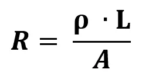

A resistência elétrica (R) pode ser definida pela seguinte equação:

A segunda Lei de Ohm, também conhecida como a Lei de Joule ou a Lei da Potência, é uma lei fundamental da física que descreve a relação entre a corrente elétrica, a resistência elétrica e a potência elétrica em um circuito elétrico. Essa lei é uma extensão da Lei de Ohm original, que relaciona a corrente elétrica e a resistência elétrica.
A segunda Lei de Ohm pode ser expressa da seguinte forma: a potência elétrica dissipada em um circuito elétrico é igual ao produto da corrente elétrica pelo quadrado da resistência elétrica. Essa relação pode ser escrita na forma matemática:
R = P * L / A
Onde:
P é a potência elétrica dissipada em um circuito elétrico, medida em watts (W)
I é a corrente elétrica que flui através do circuito elétrico, medida em amperes (A)
R é a resistência elétrica do circuito elétrico, medida em ohms (Ω)
Essa equação pode ser reorganizada para expressar qualquer uma das três variáveis em termos das outras duas, conforme necessário.
A segunda Lei de Ohm é importante porque nos permite calcular a quantidade de energia elétrica que é dissipada em forma de calor em um circuito elétrico, dada a corrente elétrica e a resistência elétrica envolvidas. Essa lei é particularmente relevante para a segurança elétrica, pois o superaquecimento de componentes elétricos devido à dissipação excessiva de energia elétrica pode causar incêndios e outros riscos.
É importante observar que a Lei de Joule só se aplica a circuitos elétricos que são puramente resistivos. Ou seja, ela não se aplica a circuitos que contêm elementos capacitivos ou indutivos, que podem armazenar e liberar energia elétrica em ciclos repetidos. Para esses tipos de circuitos, outras leis e fórmulas devem ser utilizadas para descrever a relação entre a corrente elétrica, a voltagem e a potência elétrica.